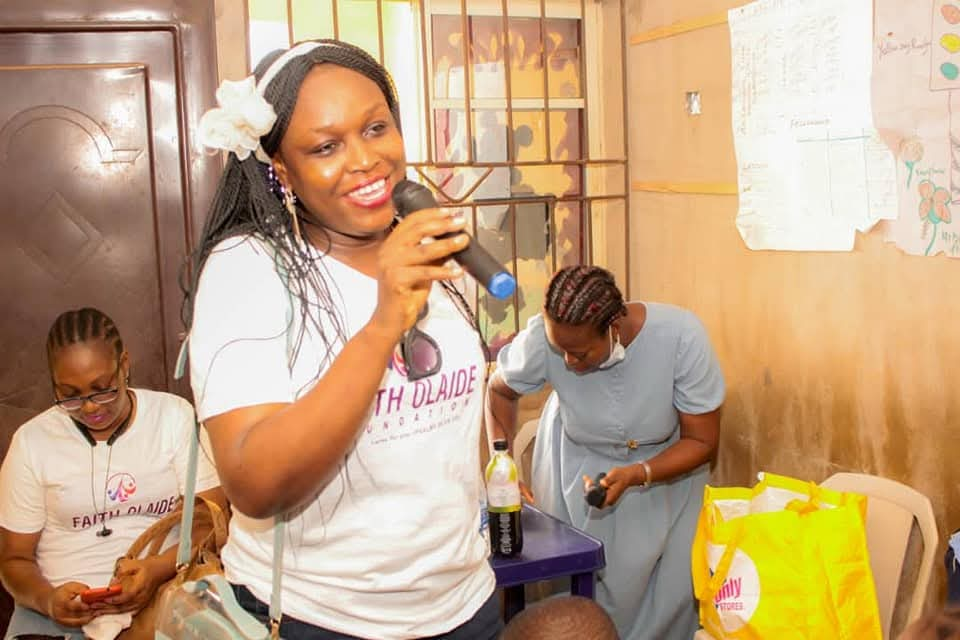
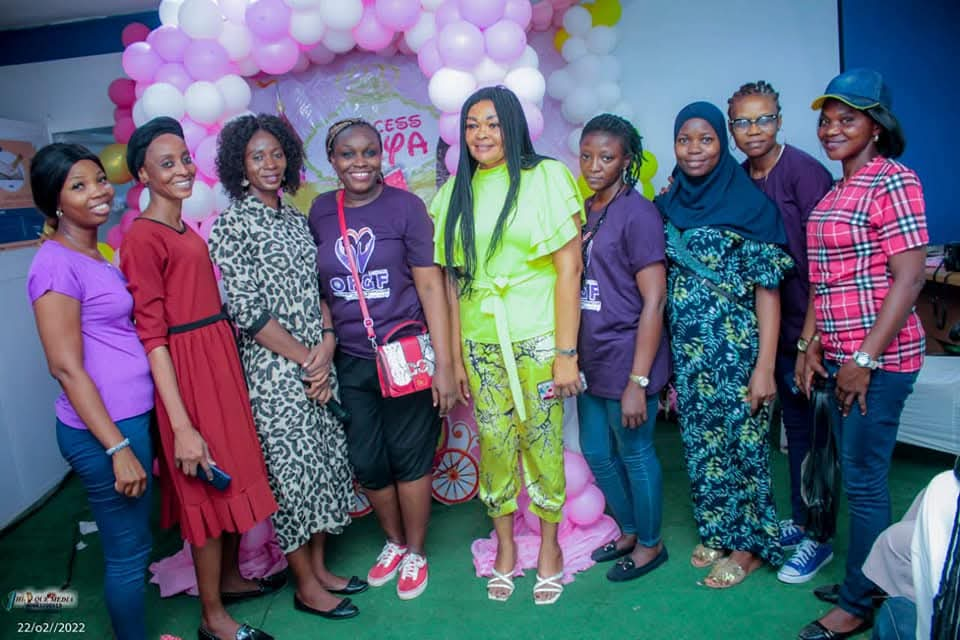

Women and Youth Empowerment
We provide encouragement, support and empowerment opportunities that help women, widows and young people move toward self-reliance.
God cares for you (Psalm 55:22)
A non-governmental, non-political, non-religious, non-ethnic and non-profit sharing organization reaching widows, less privileged people, youth and children with substance, love and hope for a fulfilled life.
Who we are
The vision of Olaidefaith Global Foundation was conceived in December 2020 by Chaplain Olaidefaith and the NGO was formally registered on 22 July 2021.
The founder is a passionate fellow who derives joy from empowering widows, less privileged people and the downtrodden through free skill acquisition and various forms of empowerment.
Read our history

International outlook
The website uses a clean, photo-led presentation inspired by international NGO sites while keeping Olaidefaith Global Foundation’s Lagos community work at the center.
Every section is built to make the foundation easy to understand for donors, partners, beneficiaries and supporters.
Main programs
Our work focuses on empowerment, hunger relief, skills, children, and the Girl Child Day outreach, with room to reach more people as support grows.
We provide encouragement, support and empowerment opportunities that help women, widows and young people move toward self-reliance.
Free skill acquisition training and empowerment projects run twice a year to help beneficiaries gain practical ability and income pathways.
Food Aid is done twice a year. It is a project that takes care of the hungry in our communities, especially during seasons of hardship.
Our International Girl Child Day outreach encourages girls through learning, advocacy, care, mentoring and community celebration.
Completed projects
Completed projects include Widows Outreaches, Food Aid Outreaches, Easter Children Outreaches, International Girl Child Day, Free Skill Acquisition and Empowerment, and Christmas Outreaches.
View activity photos
Recommendation and reviews
It was recommended that the Food Aid project should have a wider outreach to include all classes of persons, not just widows, because of the economic hardship being faced by all and sundry in Nigeria.
The outreach should also enlarge its scope on skill acquisition to empower more persons.
Join the mission
Donations, aid and grants, subventions, charity and support help the foundation reach more people with food, training and empowerment.